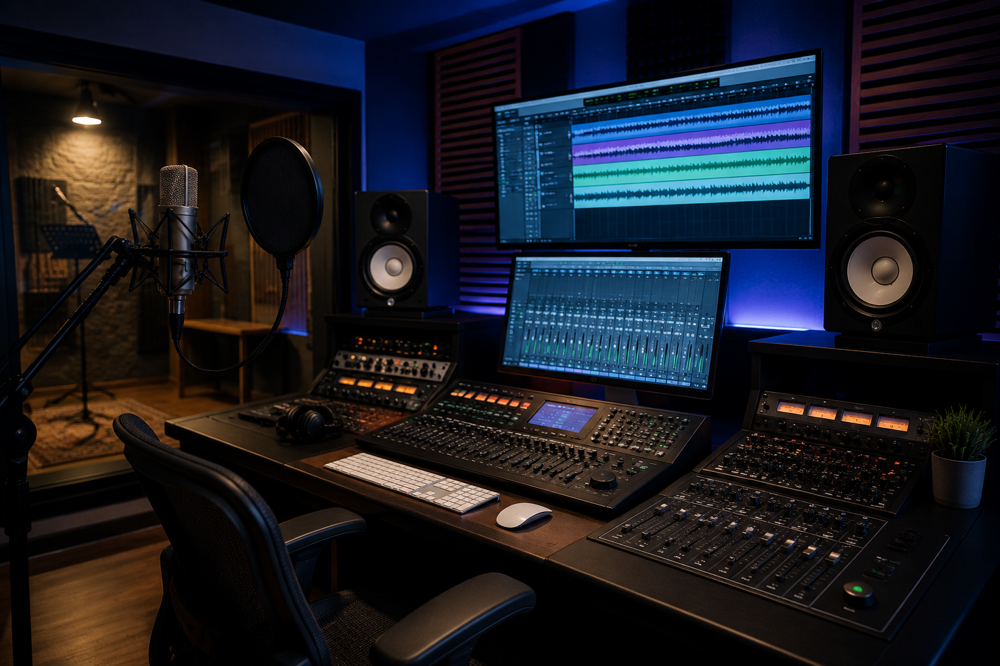

Il tuo percorso nel recording
Il corso di Recording di EMME STUDIO è pensato per musicisti, producer, cantanti e appassionati che desiderano comprendere il mondo della registrazione audio, della produzione musicale e del workflow in studio.
Le lezioni sono strutturate in modo progressivo e inclusivo, adattandosi sia ai principianti assoluti sia agli studenti che vogliono approfondire tecniche professionali di registrazione e gestione del suono.
Durante il percorso verranno affrontati: utilizzo dei microfoni, tecniche di ripresa, gestione della DAW, editing audio, organizzazione delle sessioni, registrazione vocale e strumentale, produzione moderna e workflow professionale.
L’obiettivo del corso è sviluppare autonomia, consapevolezza tecnica e capacità creative, permettendo a ogni allievo di lavorare in studio in maniera professionale e organizzata.